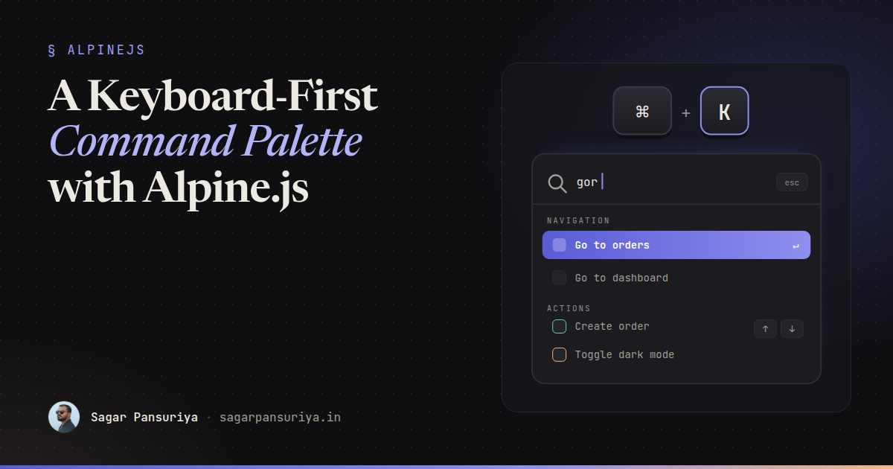
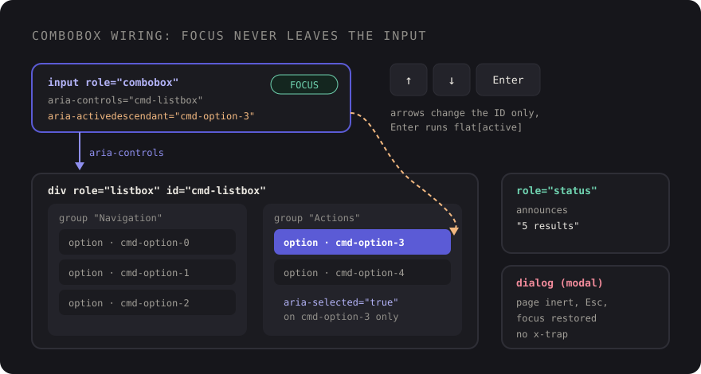

Building a Keyboard-First Command Palette with Alpine.js and Blade


You've probably noticed that the tools you use all day have one thing in common. GitHub, Linear, Slack, Vercel: press Cmd+K (or Ctrl+K), type three letters, press Enter, and you're where you wanted to be. No hunting through menus.
Admin panels and internal tools built with Laravel are exactly where this pays off, and it's very doable with Alpine.js and Blade. The tricky part isn't the filtering. It's the keyboard and screen reader behaviour: which element has focus, how the active option is announced, and how arrow keys move without breaking anything.
This post builds a complete command palette: a native <dialog>, fuzzy filtering, grouped commands, arrow-key navigation with aria-activedescendant, debounced server results, and no focus-trap plugin.
The shape of the component
A command palette is a combobox: a text input that controls a popup list of options. The ARIA pattern for it (the editable combobox with list autocomplete, from the WAI-ARIA Authoring Practices) has one rule that shapes everything else: DOM focus stays in the input. Arrow keys don't move focus to the options. Instead, the input's aria-activedescendant attribute points at the ID of the currently highlighted option, and assistive technology announces that option as if it were focused.

That's good news for us, because it means we never move focus while the palette is open. The user types, presses arrows, presses Enter, and focus is in the input the whole time.
The container is a modal <dialog> opened with showModal(). That gives us the top layer, an inert page behind it, Esc to close, and focus returning to wherever it was before. I covered those details in the native dialog post, so here I'll only use them.
Defining commands in Blade
Commands are plain data. Each one has an ID, a group, a label, optional keywords for matching, and either a URL to visit or an event to dispatch:
@php
$commands = [
['id' => 'nav-dashboard', 'group' => 'Navigation', 'label' => 'Go to dashboard', 'href' => route('dashboard')],
['id' => 'nav-orders', 'group' => 'Navigation', 'label' => 'Go to orders', 'href' => route('orders.index')],
['id' => 'nav-settings', 'group' => 'Navigation', 'label' => 'Open settings', 'keywords' => 'profile account', 'href' => route('settings')],
['id' => 'act-new-order', 'group' => 'Actions', 'label' => 'Create order', 'event' => 'order:create'],
['id' => 'act-theme', 'group' => 'Actions', 'label' => 'Toggle dark mode', 'keywords' => 'theme', 'event' => 'theme:toggle'],
];
@endphp
<x-command-palette :commands="$commands" :search-url="route('palette.search')" />In a real app I'd build that array in a view composer or a small class, and filter it by the user's permissions there. There's no point showing "Manage users" to someone who'll get a 403.
Fuzzy filtering without a library
For a few dozen commands you don't need a fuzzy search library. A subsequence match with a bit of scoring feels right: every typed character must appear in order, consecutive matches and matches at the start of a word score higher.
// resources/js/fuzzy.js
export function fuzzyScore(query, text) {
query = query.toLowerCase().replace(/\s+/g, '');
text = text.toLowerCase();
let score = 0;
let from = 0;
let streak = 0;
for (const char of query) {
const found = text.indexOf(char, from);
if (found === -1) return 0;
streak = found === from ? streak + 1 : 0;
const wordStart = found === 0 || text[found - 1] === ' ';
score += 1 + streak * 2 + (wordStart ? 3 : 0);
from = found + 1;
}
return score - text.length / 1000; // shorter labels win ties
}With this, "gor" matches "Go to orders", "dm" matches "Toggle dark mode", and "ords" ranks "Go to orders" above "Open settings". If your command list grows into the thousands, swap in a proper library. The rest of the component doesn't change.
The Alpine component
Here's the whole thing. The important detail is how indexes are assigned: we group first, then number the options in visual order, so the down arrow always moves to the next option on screen, even across groups.
// resources/js/command-palette.js
import { fuzzyScore } from './fuzzy';
export default ({ commands = [], searchUrl = null } = {}) => ({
query: '',
active: 0,
remote: [],
loading: false,
controller: null,
get groups() {
const q = this.query.trim();
const local = q
? commands
.map((cmd) => ({ ...cmd, score: fuzzyScore(q, `${cmd.label} ${cmd.keywords ?? ''}`) }))
.filter((cmd) => cmd.score > 0)
.sort((a, b) => b.score - a.score)
: commands;
const groups = [];
for (const item of [...local, ...this.remote]) {
let group = groups.find((g) => g.name === item.group);
if (!group) groups.push((group = { name: item.group, items: [] }));
group.items.push(item);
}
let index = 0;
groups.forEach((g) => g.items = g.items.map((item) => ({ ...item, index: index++ })));
return groups;
},
get flat() {
return this.groups.flatMap((g) => g.items);
},
get status() {
if (this.loading) return 'Searching…';
return this.query ? `${this.flat.length} results` : '';
},
optionId(index) {
return `cmd-option-${index}`;
},
toggle() {
const dialog = this.$refs.dialog;
dialog.open ? dialog.close() : dialog.showModal();
},
reset() {
this.controller?.abort();
this.query = '';
this.remote = [];
this.active = 0;
},
move(step) {
const count = this.flat.length;
if (!count) return;
this.active = (this.active + step + count) % count;
this.$nextTick(() =>
document.getElementById(this.optionId(this.active))?.scrollIntoView({ block: 'nearest' })
);
},
run(item) {
if (!item) return;
this.$refs.dialog.close();
if (item.href) window.location.href = item.href;
else if (item.event) window.dispatchEvent(new CustomEvent(item.event, { detail: item }));
},
async search() {
this.controller?.abort();
const q = this.query.trim();
if (!searchUrl || q.length < 2) {
this.remote = [];
return;
}
const controller = (this.controller = new AbortController());
this.loading = true;
try {
const response = await fetch(`${searchUrl}?q=${encodeURIComponent(q)}`, {
headers: { Accept: 'application/json' },
signal: controller.signal,
});
this.remote = response.ok ? await response.json() : [];
} catch (error) {
if (error.name !== 'AbortError') this.remote = [];
} finally {
if (this.controller === controller) this.loading = false;
}
},
});Register it in your entry file with Alpine.data('commandPalette', commandPalette).
A few decisions worth pointing out:
- Getters, not watchers.
groupsandflatare derived fromqueryandremote, so they're always consistent. For a list this size, recomputing on each keystroke is cheap. - AbortController for server search. Debouncing reduces requests, but it doesn't stop a slow earlier response from landing after a fast later one. Aborting the previous request does.
- Commands dispatch window events. The palette doesn't need to know how to create an order. Anything on the page can listen with
@order:create.window, including a Livewire component.
The Blade view
{{-- resources/views/components/command-palette.blade.php --}}
@props(['commands' => [], 'searchUrl' => null])
<div x-data="commandPalette({ commands: @js($commands), searchUrl: @js($searchUrl) })"
@keydown.window.prevent.cmd.k="toggle()"
@keydown.window.prevent.ctrl.k="toggle()">
<dialog x-ref="dialog" @close="reset()" @click.self="$refs.dialog.close()"
aria-label="Command palette"
class="m-auto mt-[15vh] w-full max-w-xl rounded-xl p-0 shadow-2xl backdrop:bg-zinc-950/50">
<div class="border-b border-zinc-200 p-3">
<input type="text" x-model="query" autofocus
role="combobox"
aria-controls="cmd-listbox"
aria-autocomplete="list"
:aria-expanded="(flat.length > 0).toString()"
:aria-activedescendant="flat.length ? optionId(active) : null"
placeholder="Type a command or search…"
autocomplete="off" spellcheck="false"
@input="active = 0"
@input.debounce.250ms="search()"
@keydown.down.prevent="move(1)"
@keydown.up.prevent="move(-1)"
@keydown.enter.prevent="$event.isComposing || run(flat[active])"
class="w-full border-0 bg-transparent text-base focus:ring-0">
</div>
<div id="cmd-listbox" role="listbox" aria-label="Commands"
x-show="flat.length" class="max-h-80 overflow-y-auto p-2">
<template x-for="group in groups" :key="group.name">
<div role="group" :aria-label="group.name">
<div aria-hidden="true" x-text="group.name"
class="px-3 pt-3 pb-1 text-xs font-semibold uppercase tracking-wide text-zinc-500"></div>
<template x-for="item in group.items" :key="item.id">
<div role="option"
:id="optionId(item.index)"
:aria-selected="(item.index === active).toString()"
@mousemove="active = item.index"
@mousedown.prevent
@click="run(item)"
class="flex cursor-pointer items-center rounded-lg px-3 py-2 text-sm aria-selected:bg-indigo-600 aria-selected:text-white">
<span x-text="item.label"></span>
</div>
</template>
</div>
</template>
</div>
<p x-show="query && !flat.length && !loading" class="p-6 text-center text-sm text-zinc-500">
No results for "<span x-text="query"></span>"
</p>
<div role="status" class="sr-only" x-text="status"></div>
</dialog>
</div>What each piece is doing
role="combobox"on the input, witharia-controlspointing at the listbox andaria-autocomplete="list"saying the list filters as you type.aria-activedescendantchanges as you press arrows. Screen readers announce the referenced option while focus stays in the input. When there are no results, it's removed (Alpine drops attributes bound tonull).role="option"witharia-selectedmarks the highlighted item. Tailwind'saria-selected:variant styles it from the same attribute, so the visual state and the accessible state can't drift apart.role="group"with anaria-labelgives each section a name. The visible heading isaria-hiddenso it isn't read twice.@mousedown.preventon options stops a click from moving focus out of the input. Without it, clicking an option would blur the input beforerun()is called.$event.isComposingguards Enter for people typing with an IME (Japanese, Chinese, Korean input), where Enter confirms the composed text rather than submitting.- The
role="status"region announces the result count politely, so screen reader users know whether their query matched anything.
Focus without x-trap
There's no focus trap plugin anywhere in this component, and none is needed. showModal() makes everything outside the dialog inert, so Tab can't escape. autofocus puts the cursor in the input when it opens. Closing with Esc, Enter or a backdrop click returns focus to the element that was focused before. And the close event resets the query, so the palette always opens fresh.
One caveat on the backdrop: @click.self works because the dialog has no padding and its children fill it, so a click whose target is the dialog element itself can only be a click on the backdrop.
Server results
Static commands cover navigation and actions. For records (orders, customers, projects), the debounced search() hits a small JSON endpoint. It returns items in the same shape as the commands, so they slot into their own group:
// routes/web.php
Route::get('/palette/search', function (Request $request) {
$q = $request->string('q')->trim();
return $request->user()->projects()
->where('name', 'like', "%{$q}%")
->limit(8)
->get()
->map(fn (Project $project) => [
'id' => "project-{$project->id}",
'group' => 'Projects',
'label' => $project->name,
'href' => route('projects.show', $project),
]);
})->middleware(['auth', 'throttle:60,1'])->name('palette.search');Scope the query to what the user can see, cap the results, and rate-limit the route. Prefix the IDs by type so they never collide with static command IDs in the x-for keys.
Checklist
- Cmd+K and Ctrl+K both open it, and pressing it again closes it.
- Focus stays in the input. Arrow keys change
aria-activedescendant, never DOM focus. - Options are numbered in visual order, so arrows move predictably across groups.
- The active option scrolls into view with
block: 'nearest'. - Server search is debounced and aborts stale requests.
- A status region announces result counts, and there's a visible empty state.
- Commands are filtered by permission on the server before they reach the page.
It comes in under 200 lines of JavaScript and Blade, and it tends to become the way power users move through the app. Once it's there, every new page and action is one array entry away from being keyboard-accessible.
Discussion